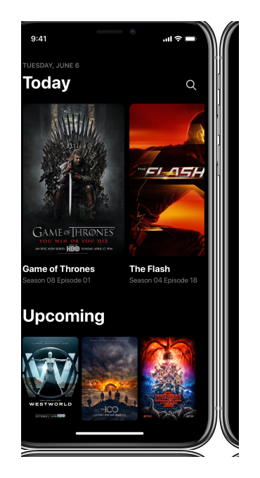

ShowTrackr is a real gem! I started using it a couple months ago and it ShowTrackr is a real gem! I started using it a couple months ago and it
Track your shows automatically
With ShowTrackr you can track your favorite TV shows automatically, so you never loose track of your TV shows ever again. 🍿
Compatible with

Features
Built and customized for your habits
ShowTrackr’s built-in machine learning and context-aware features guarantee that all the notifications and recommendations are always delivered to you in the perfect moment.
-

Automated tracking
Track your favorite shows automatically without switching between apps.
Learn more -

Machine learning
Get recommendations like never before, which are truly customized for your taste.
Learn more -

Smart notifications
Receive smart notifications exactly at the right moments when you need them.
Learn more
Easy-to-use interfaces on every platform
Since most of our features work in a completely automated way, you will mainly use our apps to discover new TV shows recommended for you and discuss the most interesting episodes with like-minded people.
-
 Customized Dashboard
Customized Dashboard
-
 Automatic Day & Night Modes
Automatic Day & Night Modes
-
 Integrated Chat Platform
Integrated Chat Platform


Community
We believe in the power of community
Our goal is to create a product and service that you’re satisfied with and use it every day. This is why we’re constantly working on our services to make it better every day and really listen to what our users has to say.
-
Twitter -
Twitter
ShowTrackr is a real gem! I started using it a couple months ago and it completely changed the way how I watch TV shows. I can only recommend it!
-
ShowTrackr is a real gem! I started using it a couple months ago and it completely changed the way how I watch TV shows. I can only recommend it!
-
Twitter
ShowTrackr is a real gem! I started using it a couple months ago and it completely changed the way how I watch TV shows. I can only recommend it!
-
Twitter
ShowTrackr is a real gem! I started using it a couple months ago and it completely changed the way how I watch TV shows. I can only recommend it!
-
Twitter ShowTrackr is a real gem! I started using it a couple months ago and it
-
ShowTrackr is a real gem! I started using it a couple months ago and it completely changed the way how I watch TV shows. I can only recommend it! ShowTrackr is a real gem! I started using it a couple months ago and it completely changed the way how I watch TV shows. I can only recommend it!
-
ShowTrackr is a real gem! I started using it a couple months ago and it completely changed the way how I watch TV shows. I can only recommend it!
-
Twitter
ShowTrackr is a real gem! I started using it a couple months ago and it completely changed the way how I watch TV shows. I can only recommend it!
-
Twitter
ShowTrackr is a real gem! I started using it a couple months ago and it completely changed the way how I watch TV shows. I can only recommend it!
Get Started
Start tracking your TV shows for free
In order to start tracking your TV shows, all you have to do is enter your email address. Everything else will be taken care of by us. All you have to do is sit back, relax and enjoy your TV shows.